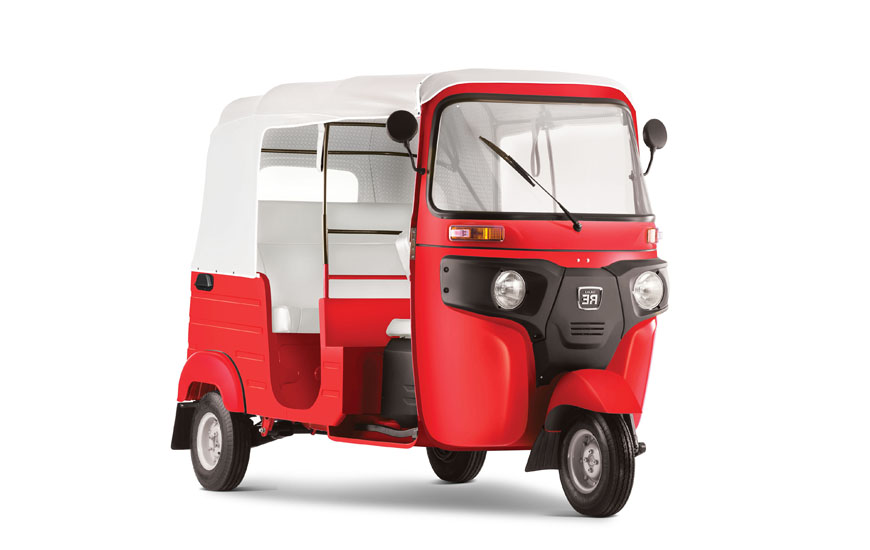

Boletos

Autobús
Precio: $100
Taxi
Precio: $80

Mototaxi
Precio: $50
Viajes Seguros a Tu Destino
Descubre la mejor manera de viajar a San Juan Bautista Tuxtepec, Oaxaca. Ofrecemos opciones de transporte seguras, cómodas y accesibles. ¡Viaja con estilo!
Nuestra ubicación es estratégica, ubicada en el corazón de Oaxaca, lo que nos permite ofrecer servicios de transporte a diferentes partes de la región. Nuestro equipo de profesionales está comprometido con la seguridad y la comodidad de nuestros clientes.
En Transport Tux, nos esforzamos por ofrecer una experiencia de viaje inolvidable. Nuestros vehículos están equipados con las últimas tecnologías y nuestros conductores son profesionales experimentados. ¡Viaja con nosotros y descubre la diferencia!
En el corazón de Oaxaca, donde las montañas se alzan,
Nació la idea de Transport Tux, un sueño que se desbordaba.
Un servicio de transporte seguro, cómodo y accesible,
Para conectar a la gente con San Juan Bautista Tuxtepec, su destino ideal.
Con pasión y dedicación, se trabajó día y noche,
Para crear un servicio que fuera más que un simple transporte.
Se buscó la calidad, la eficiencia y la atención al cliente,
Para que cada viaje fuera una experiencia inolvidable y segura.
Ahora, Transport Tux es la opción preferida,
Para aquellos que buscan llegar a su destino con estilo y comodidad.
Con rutas seguras y profesionales a su servicio,
Transport Tux es el compañero ideal para cualquier viaje.
Desde sus inicios, Transport Tux ha estado comprometido con la calidad y la seguridad de sus servicios. Nuestro equipo de profesionales está siempre dispuesto a ayudar a nuestros clientes a encontrar la mejor opción para sus necesidades.
Nuestra misión es ser la opción preferida para aquellos que buscan un servicio de transporte confiable y eficiente. Estamos comprometidos con la satisfacción de nuestros clientes y con la seguridad de nuestros pasajeros.
Precio: $100
Precio: $80
Precio: $50